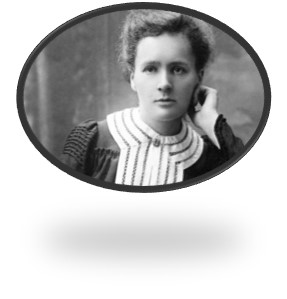

LAS MUJERES MAS IMPORTANTES
Ada Lovelace, 1815–1852
Aunque Silicon Valley se destaca por la fuerte impronta sexista de su cultura, la primera programadora fue mujer. Augusta Ada King, nacida Byron —la única hija que el poeta Lord Byron tuvo dentro de su matrimonio con Anne Isabella Noel—, trabajó con Charles Babbage en la creación que el matemático llamó la Máquina Analítica; pero aunque él sólo consideraba que su creación servía para cálculos de números, la condesa de Lovelace estimó que podía ejecutar otras habilidades.
Marie Curie, 1867-1934
Esta pionera en el campo de la radiactividad —incluso acuñó el término— fue la primera mujer profesora en la Universidad de París y la primera persona que recibió dos premios Nobel, uno en Física y otro en Química. Sus descubrimientos abrieron el camino a los tratamientos del cáncer.
Malala Yousafzai
Malala es una activista a favor de los derechos civiles, especialmente los de las mujeres en el valle del río Sway, en Pakistán, donde el régimen talibán tiene prohibido la asistencia a la escuela de las niñas. Sus ideales le llevaron a recibir un disparo en la cabeza cuando regresaba en autobús de la escuela a su casa en la ciudad de Mingora. Lejos de echarse atrás, la joven extendió su lucha a nivel mundial. Su labor le llevó a ser premiada con el Nobel de la Paz en 2014.